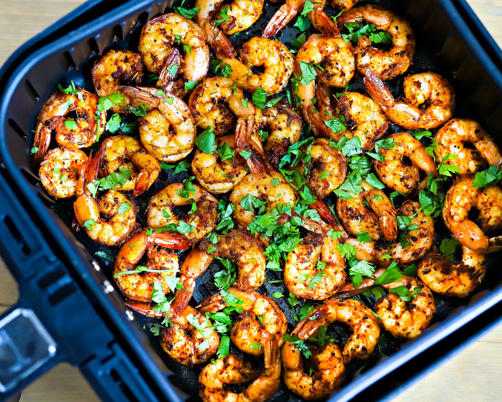

Air Fryer recipes

Description
An air fryer is a popular kitchen appliance used to make fried foods such as meat, pastries, and potato chips. It works by circulating hot air around the food to produce a crunchy, crispy exterior.
Ingredients
- ½ cup all-purpose flour
- 1 ½ teaspoons ground black pepper
- 2 large eggs
- ⅔ cup unsweetened flaked coconut
- ⅓ cup panko bread crumbs
Steps
- Prep:30 mins
- Cook:15 mins
- Total:45 mins
- Servings:6